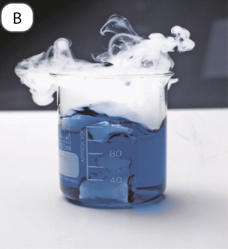
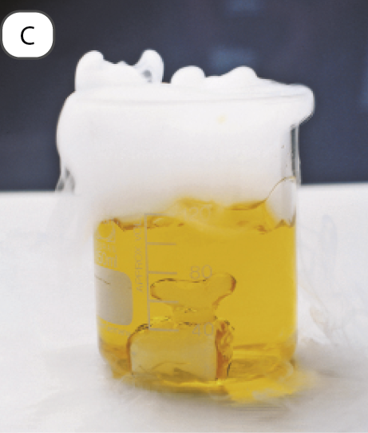
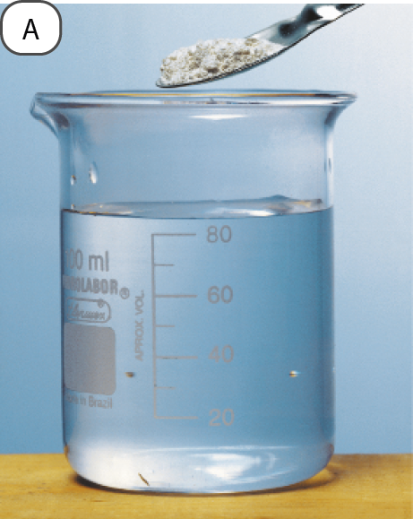
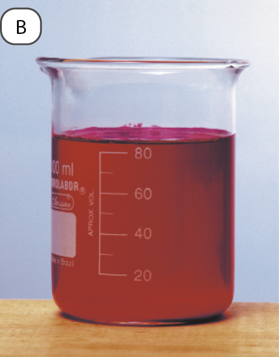
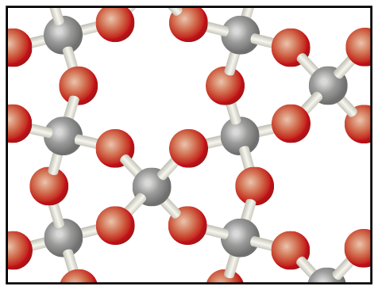

Óxidos
Óxidos são uma ampla categoria de substâncias que incluem desde substâncias comuns em nosso cotidiano até compostos bastante específicos usados em pesquisas de ponta (Fig. 16). Um óxido é um composto químico formado por apenas dois elementos químicos, no qual o oxigênio é o mais eletronegativo.
Nos óxidos moleculares, a ligação entre o oxigênio e o outro elemento é covalente, constituindo moléculas. Podemos citar como exemplos NO (monóxido de nitrogênio), NO₂ (dióxido de nitrogênio), CO (monóxido de carbono), CO₂ (dióxido de carbono), SO₂ (dióxido de enxofre), SO₃ (trióxido de enxofre), N₂O₃ (trióxido de dinitrogênio), N₂O₅ (pentóxido de dinitrogênio) e P₂O₅ (pentóxido de difósforo). O SiO₂ (dióxido de silício) é um sólido macromolecular em cujo cristal cada silício está ligado a quatro oxigênios e cada oxigênio, a dois silícios. É o óxido constituinte do quartzo e da sílica.
Nos óxidos iônicos, o oxigênio encontra-se como ânion, frequentemente O²⁻ (denominado íon óxido), e o elemento a ele ligado, como cátion. Exemplos são Li₂O (óxido de lítio), Na₂O (óxido de sódio), K₂O (óxido de potássio), MgO (óxido de magnésio), CaO (óxido de cálcio), BaO (óxido de bário), A l₂O₃ (óxido de alumínio), FeO (óxido de ferro (II)) e Fe₂O₃ (óxido de ferro (III)).
As propriedades dos óxidos são muito diversas e vamos comentar algumas que são de interesse para o presente estudo. Os óxidos ácidos, como CO₂, SO₂, SO₃, NO₂, N₂O₃, N₂O₅ e P₂O₅, reagem com água, resultando em solução ácida (Fig. 17). Um exemplo pode ser assim equacionado:
Tais compostos também reagem com bases, formando sal e água:
CO₂ (g) + 2 NaOH (aq) → Na₂CO₃ (aq) + H₂O ( l )
Figura 16. A química indiana Uma Chowdhry (nascida em 1947), em foto de 2008. Ela investigou diversos temas, sobretudo cerâmicas supercondutoras, por exemplo, a representada pela fórmula T l₂Ba₂Ca₂Cu₃O₁₀, proveniente de transformações químicas envolvendo os óxidos T l₂O₃, BaO, CaO e CuO.


Figura 17. Sob pressão de 1 atm, o CO₂ sólido (gelo-seco) sublima a –78 °C. Essa substância não deve entrar em contato com a pele, pois causa lesões em razão de sua baixa temperatura. Gelo-seco (A) é adicionado à água levemente alcalinizada (B), contendo azul de bromotimol (indicador ácido-base azul em meio básico e amarelo em meio ácido). A mudança de cor para amarelo (C) se deve à reação do CO₂ com a água, que deixa o meio ácido.
Os óxidos básicos, como Li₂O, Na₂O, K₂O, MgO, CaO e BaO, reagem com água, produzindo solução básica (Fig. 18). Por exemplo:
CaO (s) + H₂O ( l) → Ca²⁺ (aq) + 2 OH⁻ (aq)
Esse tipo de óxido reage também com ácidos, formando sal e água:
CaO (s) + H₂SO₄ (aq) → CaSO₄ (s) + H₂O ( l)


Figura 18. O béquer (A) contém água e fenolftaleína. A adição de cal viva (CaO, pó branco na ponta da espátula) faz a fenolftaleína ficar avermelhada (B), evidenciando que se trata de um óxido básico. A cal tem efeito extremamente corrosivo sobre pele e olhos e não deve ter contato com eles.
Os óxidos neutros, como CO, NO e N₂O, não apresentam tendência a reagir com água, ácidos ou bases, nas condições ambientes de temperatura e pressão (25 °C e 1 atm).
Exercícios
28. Na fabricação de panelas de vidro, são usadas as matérias-primas representadas por SiO₂, B₂O₃, Na₂CO₃ e CaCO₃. Explique quais desses compostos são óxidos e quais não são, argumentando por quê.
29. Dióxido de carbono (gás carbônico) e óxido de cálcio (cal viva) diferem em alguns aspectos.
- a. Qual deles é constituído de moléculas? Qual é a composição dessas moléculas?
- b. Qual é iônico? De que íons é constituído?
- c. Qual confere caráter ácido e qual confere caráter alcalino a uma solução aquosa? Justifique elaborando equações químicas.
Informações para as atividades 30 e 31:
Os dois óxidos de nitrogênio mais significativos como poluentes são o óxido nítrico [monóxido de nitrogênio], NO, e o dióxido de nitrogênio, NO₂, coletivamente representados por NOₓ. Eles tendem a entrar na atmosfera como NO, e processos fotoquímicos [induzidos pela luz] atmosféricos podem transformar NO em NO₂. Reações subsequentes podem resultar na formação de sais corrosivos do tipo nitrato ou de ácido nítrico, HNO₃. [...] O óxido de enxofre, SO₂, é um produto da reação de queima de combustíveis que contêm enxofre (especialmente carvão) e também pode ser emitido na atmosfera em gases vulcânicos. Parte desse dióxido de enxofre é convertida na atmosfera a ácido sulfúrico, principal responsável pela precipitação ácida.
Fonte: MANAHAN, S. Environmental Chemistry. 11. ed. Boca Raton: CRC Press, 2022. p. 207. (Tradução dos autores.)
Pesquisando sobre reações de óxidos, uma estudante encontrou as seguintes equações:
- I . Na₂O (s) + H₂O ( l) → 2 Na⁺ (aq) + 2 OH⁻ (aq)
- II. K₂O (s) + H₂O ( l) → 2 K⁺ (aq) + 2 OH⁻ (aq)
- III. S (s) + O₂ (g) → SO₂ (g)
- IV. 2 SO₂ (g) + O₂ (g) → 2 SO₃ (g)
- V .
- VI .
30. A 1 atm e 25 °C, o pH da chuva em locais não poluídos é 5,6, o que é atribuído à reação entre CO₂ do ar e a água da chuva, assim equacionada:
- a. Pensando estritamente no pH mencionado, essa chuva é ácida, neutra ou alcalina?
- b. Em Ciências da Natureza, o termo “chuva ácida” é empregado para designar uma chuva que seja mais ácida que a mencionada, o que pode decorrer da presença de certos poluentes. O que se pode, então, afirmar sobre o pH de uma precipitação atmosférica considerada chuva ácida? Que ácidos, presentes na chuva em decorrência de poluição, acarretam o fenômeno?
31. Escolha, entre as equações químicas apresentadas, as que possibilitem justificar os fatos listados a seguir:
- a. O surgimento do poluente dióxido de enxofre na atmosfera se deve à queima de combustíveis fósseis, como carvão mineral e derivados de petróleo, que contêm enxofre como impureza.
- b. O dióxido de enxofre, por oxidação na atmosfera, converte-se em outro poluente, que acarreta a formação de ácido sulfúrico na chuva.
- c. Além da representação NOₓ, que designa óxidos poluentes de nitrogênio, alguns textos técnicos utilizam SOₓ para representar dois óxidos de enxofre poluentes.
- d. Cinzas, que contêm óxido de potássio e óxido de sódio, produzem meio alcalino se forem misturadas com água. Por isso, cinzas são perigosas em contato com a pele e os olhos, já que reagem com a umidade neles existente.
32. O monóxido de carbono (CO) é um poluente que não afeta a acidez da chuva, mas é muito tóxico. Pesquise a razão dessa toxicidade e elabore uma lista de ações individuais que você deve tomar para não ser intoxicado por ele.
33. (Fuvest-SP) A figura a seguir traz um modelo da estrutura microscópica de determinada substância no estado sólido, estendendo-se pelas três dimensões do espaço. Nesse modelo, cada esfera representa um átomo e cada bastão, uma ligação química entre dois átomos.

A substância representada por esse modelo tridimensional pode ser
- a. sílica, (SiO₂)ₙ.
- b. diamante, C.
- c. cloreto de sódio, NaC l.
- d. zinco metálico, Zn.
- e. celulose, (C₆H₁₀O₅)ₙ.
34. (Uerj) Na atmosfera artificial do interior das cápsulas espaciais, o oxigênio consumido pelos astronautas é renovado a partir de reservas de O₂. Para manter a concentração do gás produzido pelo metabolismo energético dos tripulantes em níveis não tóxicos, o ar artificial dessas cápsulas precisa, ainda, ser continuamente purificado. Uma das substâncias que podem ser utilizadas na purificação do ar, com esse objetivo, é:
- a. HCl.
- b. K₂SO₄.
- c. H₂CO₃.
- d. NaOH.